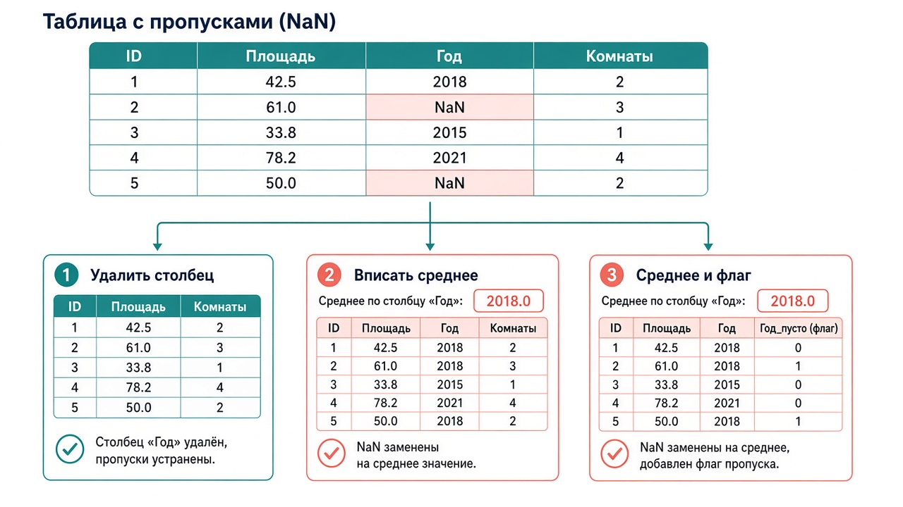

2. Пропущенные значения (Missing Values)
Пропущенные значения — распространённая проблема. Будьте готовы встретить её в реальных наборах данных.

Случайный лес из scikit-learn не начинает обучение, если в признаках остался NaN. Сообщение будет про NaN или Input contains. Это не поломка таблицы, а требование библиотеки: ей нужно число в каждой ячейке.
Дальше три способа. Их сравнивают одной и той же проверкой, иначе непонятно, что именно уменьшило ошибку.
- Удалить столбцы с пропусками. Просто, но жадно. Если в столбце из 10000 ячеек пуста одна, пропадает весь столбец, и модель больше не видит год или комнаты.
- Подставить среднее. По столбцу
yearна обучении считают средний год и вписывают его во все пустые годы. Настоящий год квартиры был другим, но столбец остаётся, и у леса есть чем пользоваться. - Среднее плюс флаг. То же среднее и ещё один столбец, например
year_was_missing. В нёмTrue, если год изначально был пуст. Иногда сам факт пропуска связан с ценой: анкета заполнена не до конца. Флаг даёт модели этот факт отдельно от подставленного числа.
На этом шаге район не берём. Район — текст, лес его тоже не примет, и ошибка смешалась бы с темой следующего раздела. Сравниваем только area, year, rooms.
Ячейка. Чтение таблицы и разбиение.
import pandas as pd
from sklearn.model_selection import train_test_split
from sklearn.ensemble import RandomForestRegressor
from sklearn.metrics import mean_absolute_error
from sklearn.impute import SimpleImputer
# index_col не указываем: первая колонка файла — это flat_id, а не номер строки pandas.
flats = pd.read_csv("module-7-0/data/flats_gaps.csv")
print(flats.shape)
# isna() даёт True в пустых ячейках, sum() считает их по каждому столбцу.
print(flats.isna().sum())
# y — столбец ответов. Модель будет подбирать цену, глядя на остальные поля.
y = flats.price
# Номер квартиры и текст «цена 6230» ничего не объясняют.
# Если оставить price_note, модель прочитает цену из подписи и ошибка станет нулевой.
X = flats.drop(columns=["price", "price_note", "flat_id"])
# 80 % строк — обучение, 20 % — проверка. random_state=0 фиксирует жребий:
# без него у каждого запуска были бы другие 2000 проверочных квартир и другая MAE.
X_train, X_valid, y_train, y_valid = train_test_split(
X, y, train_size=0.8, test_size=0.2, random_state=0
)
print(X_train.shape, X_valid.shape)
# select_dtypes(include="number") забирает area, year, rooms и оставляет район в стороне.
# copy(), чтобы следующие ячейки не меняли исходный X_train.
num_cols = list(X_train.select_dtypes(include="number").columns)
X_train_num = X_train[num_cols].copy()
X_valid_num = X_valid[num_cols].copy()
print(num_cols)
Критерий 7.0.1а. shape равен (10000, 7). Пропусков: district 243, year 588, rooms 434, у flat_id, area, price и price_note нули. После разбиения печать (8000, 4) (2000, 4): четыре столбца — это ещё и район, он в X, но не в num_cols. Числовые столбцы: area, year, rooms.
Дальше одна и та же функция измеряет все три способа. Так в сравнении меняется только подготовка таблицы, а не число деревьев.
Ячейка. Удаление столбцов.
def score_dataset(X_train, X_valid, y_train, y_valid):
# n_estimators=10 — десять деревьев в лесу. Для сверки числа важнее, чем для качества:
# с другим числом деревьев MAE будет другой, и критерий ниже не сойдётся.
model = RandomForestRegressor(n_estimators=10, random_state=0)
# fit видит только обучение. Цены проверки в обучение не попадают.
model.fit(X_train, y_train)
preds = model.predict(X_valid)
# mean_absolute_error усредняет |прогноз − настоящая цена| по 2000 строкам проверки.
return mean_absolute_error(y_valid, preds)
# Список имён столбцов, где на обучении есть хотя бы одна пустая ячейка.
# Проверку тут не смотрим: набор выбрасываемых столбцов решают по обучению,
# а из проверки выкидывают те же имена. Иначе у двух таблиц разный набор колонок.
cols_with_missing = [col for col in X_train_num.columns if X_train_num[col].isna().any()]
print(cols_with_missing)
print(X_train_num.isna().sum())
reduced_X_train = X_train_num.drop(columns=cols_with_missing)
reduced_X_valid = X_valid_num.drop(columns=cols_with_missing)
mae_drop = score_dataset(reduced_X_train, reduced_X_valid, y_train, y_valid)
# :.2f печатает ровно два знака после запятой, чтобы 278.10 не превращалось в 278.1.
print(f"MAE, удаление столбцов: {mae_drop:.2f}")
Критерий 7.0.1б. В списке пропусков year и rooms. Площадь в список не входит: она заполнена у всех. На обучении пустых лет 457, пустых комнат 346. Это меньше 588 и 434, потому что часть дыр уехала в проверку. MAE удаления столбцов — 389.39. В модели осталась одна площадь, поэтому промах большой: по площади цены квартир одного метража всё равно различаются.
Ячейка. Среднее и среднее с флагом.
# SimpleImputer() без аргументов подставляет среднее.
# fit_transform считает среднее по X_train_num и сразу заполняет эту таблицу.
# transform на проверке подставляет уже посчитанные средние, заново их не ищет.
# Если вызвать fit и на проверке, среднее будет «подсмотрено» у квартир, которых модель не должна знать.
imputer = SimpleImputer()
imputed_X_train = pd.DataFrame(imputer.fit_transform(X_train_num), columns=num_cols)
imputed_X_valid = pd.DataFrame(imputer.transform(X_valid_num), columns=num_cols)
mae_mean = score_dataset(imputed_X_train, imputed_X_valid, y_train, y_valid)
print(f"MAE, среднее: {mae_mean:.2f}")
# copy(), потому что дальше добавляем столбцы. Исходный X_train_num пригодится, если ячейку перезапустят.
X_train_plus = X_train_num.copy()
X_valid_plus = X_valid_num.copy()
for col in cols_with_missing:
# isna() ещё до заполнения: после среднего пустых ячеек уже не останется и флаг станет бесполезным.
X_train_plus[col + "_was_missing"] = X_train_plus[col].isna()
X_valid_plus[col + "_was_missing"] = X_valid_plus[col].isna()
imputer_plus = SimpleImputer()
imputed_X_train_plus = pd.DataFrame(imputer_plus.fit_transform(X_train_plus), columns=X_train_plus.columns)
imputed_X_valid_plus = pd.DataFrame(imputer_plus.transform(X_valid_plus), columns=X_valid_plus.columns)
mae_flags = score_dataset(imputed_X_train_plus, imputed_X_valid_plus, y_train, y_valid)
print(f"MAE, среднее и флаги: {mae_flags:.2f}")
print(list(imputed_X_train_plus.columns))
fit_transform возвращает массив без имён столбцов. Обратно в DataFrame имена кладут вручную, иначе следующая ячейка не отличит год от комнат.
Критерий 7.0.1в. MAE среднего — 353.69. MAE среднего с флагами — 352.63. Оба числа меньше 389.39: год и комнаты полезнее, чем их выбрасывание. Флаги почти ничего не меняют, на этой таблице пропуск года не несёт отдельной подсказки о цене. Столбцы после флагов: area, year, rooms, year_was_missing, rooms_was_missing.
Вывод раздела: из трёх способов на этих квартирах лучше среднее. Флаги можно оставить, они не вредят, но и не обязательны. Удалять year и rooms не стоит.